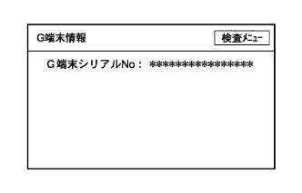

)参照。
)参照。G-BOOKシステム ダイアグノーシスシステム |
)参照。ダイアグノーシス起動(要領は参照)
ダイアグノーシス解除(要領は参照)
|  |
G端末情報
ダイアグノーシスを起動させ、ダイアグ検査メニュー画面を表示させる。
ダイアグ検査メニュー画面の“G端末情報”を選択し、G端末情報画面を表示させる。
G-BOOK端末情報内容を確認する。
| 表示 | 意味 |
|---|---|
| G端末シリアルNo. | ナビゲーションレシーバASSYが保有するG-BOOK端末シリアルNo.を読み出して表示する(G-BOOK端末ID) |
 |
ヘルプネット検査メニュー
ダイアグノーシスを起動させ、ダイアグ検査メニュー画面を表示させる。
ダイアグ検査メニュー画面の“ヘルプネット検査”を選択し、ヘルプネット検査メニュー画面を表示させる。
内容を確認する。
| 項目 | 表示内容 |
|---|---|
| メーデー種別 | 搭載されているヘルプネット車載機のタイプを表示する(本車種では“C(ワンタッチタイプ)”と表示) |
| 車載機ID | 搭載されているヘルプネット車載機のIDを表示する |
| 契約状態 | ヘルプネットサービスの契約状態を以下のように表示する
|
| 次回保守点検 | 次回自動保守点検日を表示する |